Een wagen zonder geldige APK mag de weg niet op. Een trekker zonder geldige ADR-controle mag geen gevaarlijke stoffen vervoeren. Een blusser die over datum is, telt bij een controle niet mee. Daar willen wij nooit achter komen op het moment dat de chauffeur al onderweg is.
Daarom houden wij van elke wagen in ons systeem bij wanneer de keuringen aflopen. Niet in een map, niet in een los spreadsheet, maar in hetzelfde systeem waarin wij plannen en factureren. Zo kijkt iedereen naar hetzelfde overzicht en kan er niets tussen wal en schip vallen.
Het systeem doet drie dingen voor ons:
U merkt er idealiter niets van — en dat is precies de bedoeling. De wagens die voor u rijden, zijn gekeurd, hebben een geldige ADR-controle en de brandblussers aan boord zijn in orde. Deze handleiding laat zien hoe wij dat borgen.
Dit is het scherm waar wij beginnen. Bovenin staat hoeveel onderhoudsklussen er openstaan en hoeveel er in uitvoering zijn. Daaronder staat het blok dat er voor deze handleiding het meest toe doet: Verloopt binnenkort.
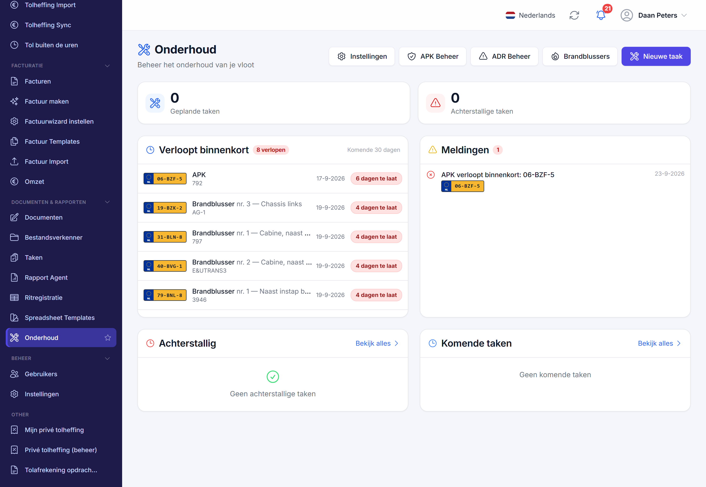
In dit ene blok staan de APK's, de ADR-controles en de brandblussers bij elkaar. Geen drie aparte lijstjes, maar één lijst met alles wat binnen dertig dagen afloopt. Wat al verlopen is, staat bovenaan. In de kop van het blok staat een rode teller met het aantal zaken dat echt te laat is.
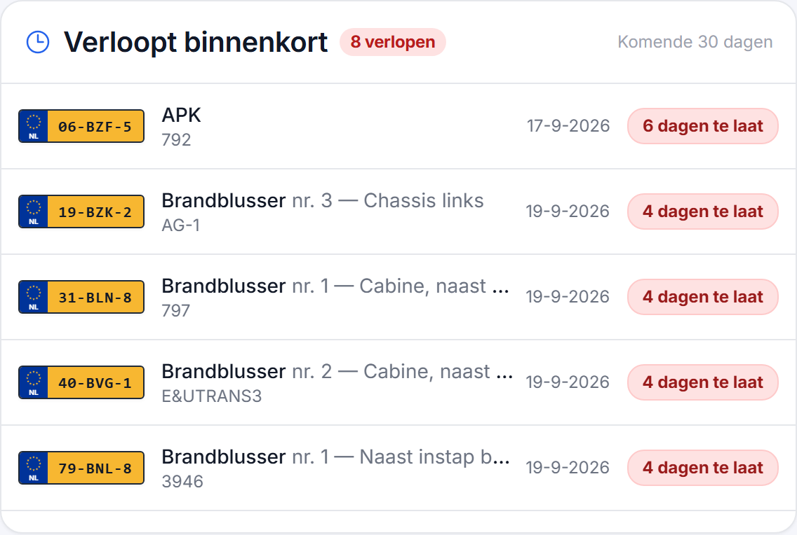
De kleur van het bolletje rechts zegt in één oogopslag hoe dringend het is:
| Kleur | Betekenis |
|---|---|
| Verlopen | De datum is gepasseerd. Deze wagen moet nu geregeld worden. |
| 4d | Nog een paar dagen. Er moet nú een afspraak staan. |
| 19d | Binnen een maand. Inplannen in overleg met de planning. |
| 96d | Ruim op tijd. Geen actie nodig. |
Klikt u op een regel in dit blok, dan springt het systeem direct naar de bijbehorende beheerpagina — naar de APK-lijst, de ADR-lijst of de brandblussers. U hoeft dus niet zelf te gaan zoeken welke wagen bedoeld wordt.
Van elke wagen in de vloot staat de APK-vervaldatum vast in het systeem. Het scherm APK Beheer toont die als een wand van kaartjes, gesorteerd op wie het eerst aan de beurt is.
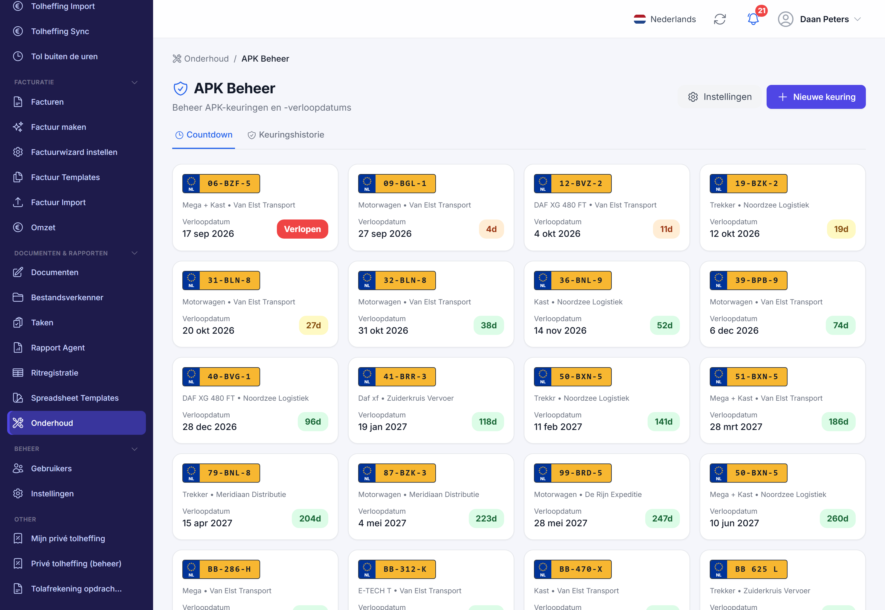
De volgorde is bewust zo gekozen: linksboven staat de wagen die als eerste aan de beurt is, rechtsonder die met de meeste speling. Wie het scherm opent, ziet dus meteen waar het knelt zonder te hoeven filteren of sorteren.
| Nog te gaan | Wat er gebeurt |
|---|---|
| Meer dan 30 dagen | Groen. Het kaartje staat er gewoon, verder niets. |
| 30 tot 14 dagen | Geel. De wagen verschijnt in het blok "Verloopt binnenkort" én er gaat een eerste herinnering uit per mail en in de app. |
| 14 dagen of minder | Oranje. Vanaf hier komt de herinnering elke dag terug. Dit is het moment waarop er een afspraak moet staan. |
| Datum gepasseerd | Rood, met het label Verlopen. De wagen springt naar boven in de lijst en de dagelijkse herinnering blijft komen. |
Net als bij ADR en de brandblussers kunt u per keuring aanvinken welke collega's een bericht moeten krijgen. Vult u dat niet in, dan pakt het systeem de standaardontvangers uit de APK-instellingen — te openen via de knop Instellingen rechtsboven in het scherm. Hoofdstuk 7 laat dat scherm zien.
Bovenin het scherm staat naast Countdown ook het tabblad Keuringshistorie. Daar staan alle eerdere keuringen van een wagen. Wilt u weten wanneer een bepaalde wagen de afgelopen jaren gekeurd is, dan is dat terug te halen.
Voor het vervoer van gevaarlijke stoffen gelden aparte eisen. Wij leggen per wagen een ADR-regel vast met een eigen vervaldatum, een eigen omschrijving en een eigen lijst van collega's die gewaarschuwd moeten worden.
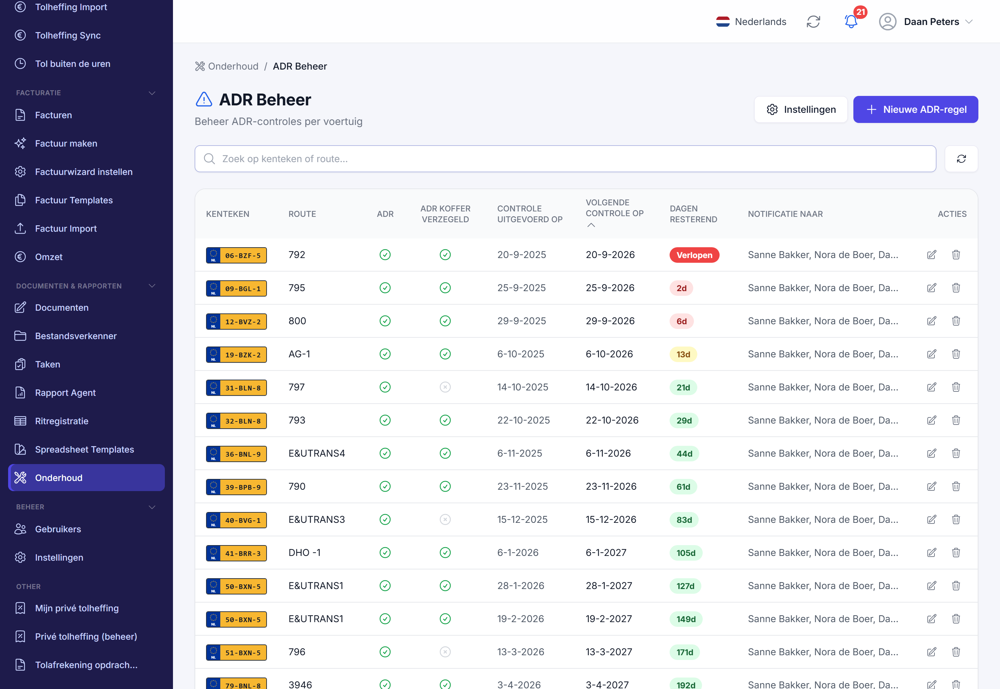
Niet elke wagen rijdt ADR, en niet elke ADR-verplichting loopt op dezelfde datum af. Door er losse regels van te maken kunnen wij per wagen vastleggen waar het precies om gaat — de ADR-keuring zelf, de blusuitrusting, de documentatie — en kan elke regel zijn eigen vervaldatum en eigen ontvangers hebben.
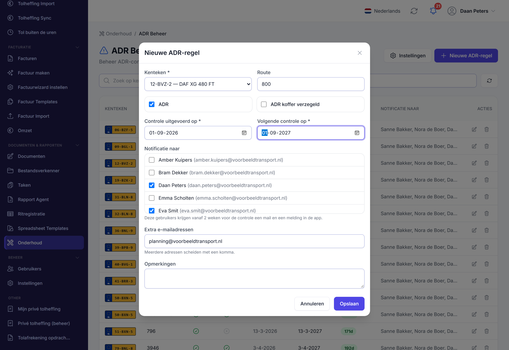
Een ADR-regel wordt al oranje bij veertien dagen en rood bij zeven dagen. De reden is simpel: een ADR-controle is lastiger op korte termijn in te plannen dan een APK, dus bouwen wij meer marge in.
Een trekker met oplegger heeft vaak meerdere blussers aan boord, en die zijn zelden op dezelfde dag gekeurd. Daarom legt ons systeem elke blusser apart vast: met een eigen nummer, een eigen plaats op de wagen, een eigen serienummer en een eigen vervaldatum.
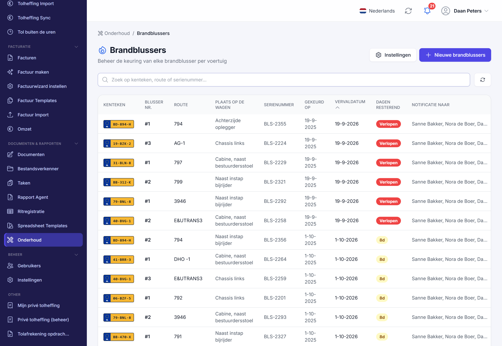
In de lijst staat per blusser:
Komt een wagen terug van de blusserkeuring, dan hoeft er niet drie keer een formulier ingevuld te worden. U kiest de wagen, geeft aan hoeveel blussers er aan boord zijn, en het systeem zet het juiste aantal invulblokken klaar.
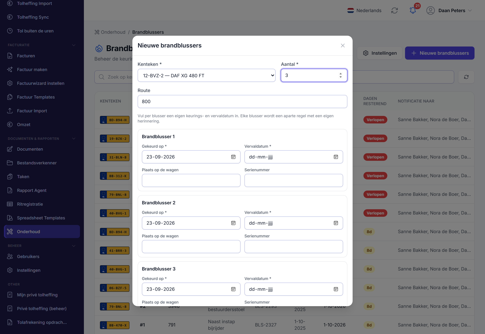
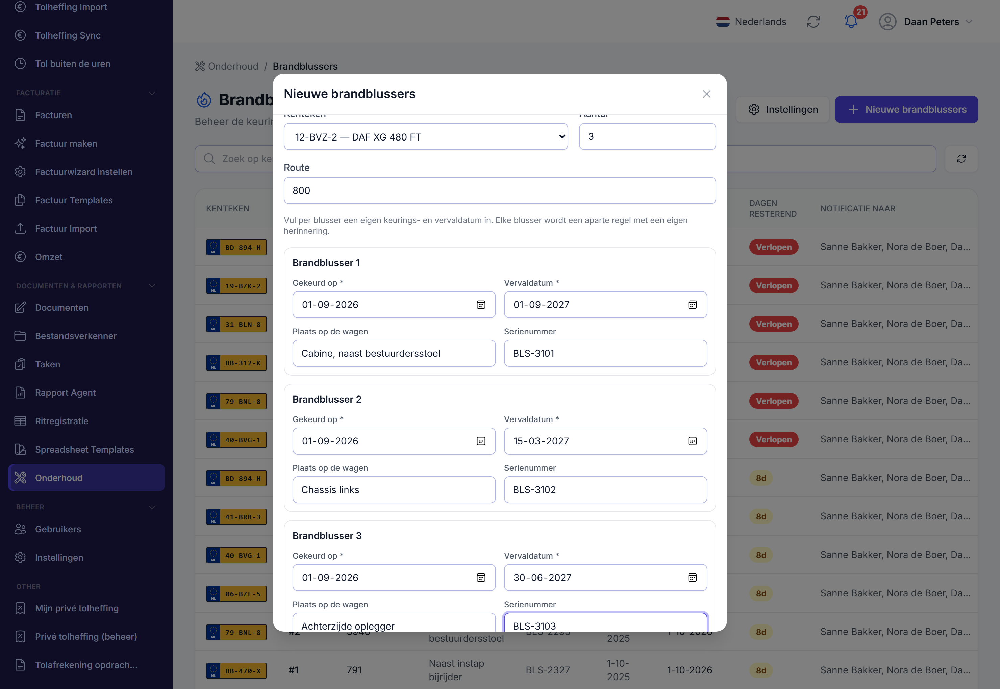
Onderaan hetzelfde formulier staat wie er bericht krijgt zodra een van deze blussers bijna verloopt. Onder de lijst staat letterlijk: "Deze gebruikers krijgen vanaf 2 weken voor de vervaldatum een mail en een melding in de app."
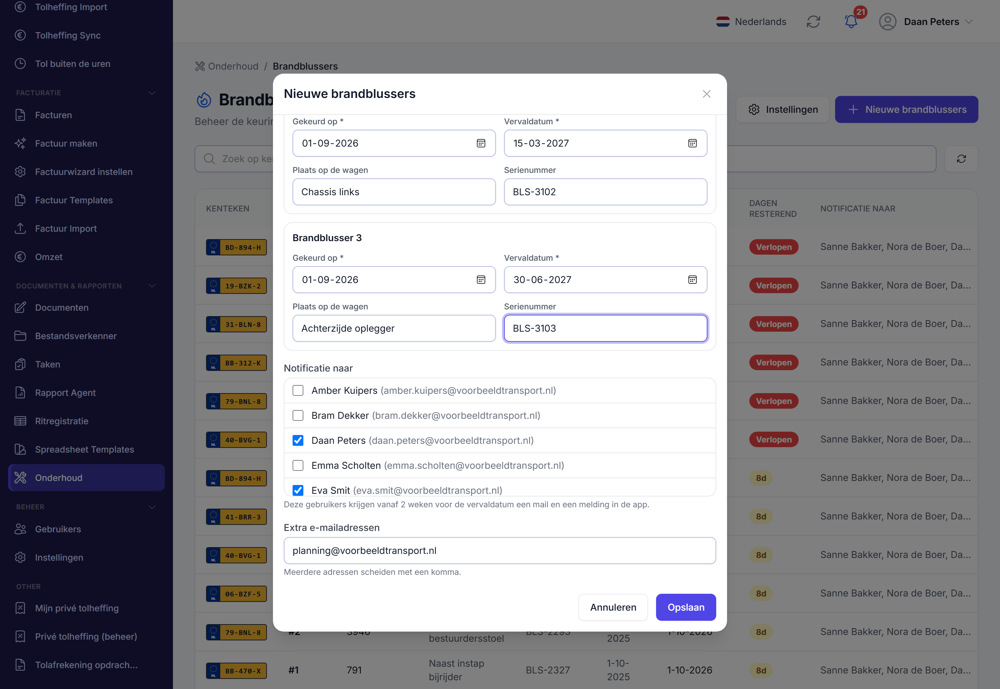
Omdat bij een controle langs de weg niet gevraagd wordt of "de blussers in orde zijn", maar gekeken wordt naar de sticker op díé ene blusser. Door plaats en serienummer vast te leggen, kunnen wij bij elke melding precies benoemen welke blusser vervangen of gekeurd moet worden.
Een aftelklok in een scherm helpt alleen als iemand dat scherm opent. Daarom stuurt het systeem de waarschuwing actief naar ons toe, langs twee wegen tegelijk: een e-mail en een melding in de app.
Elke ochtend om 07:00 uur kijkt het systeem de hele vloot na. Alles wat binnen de waarschuwingstermijn valt of al verlopen is, levert een e-mail op. Die mail is bewust kort en concreet — geen tabel met vijftig regels, maar één bericht per zaak die aandacht nodig heeft.
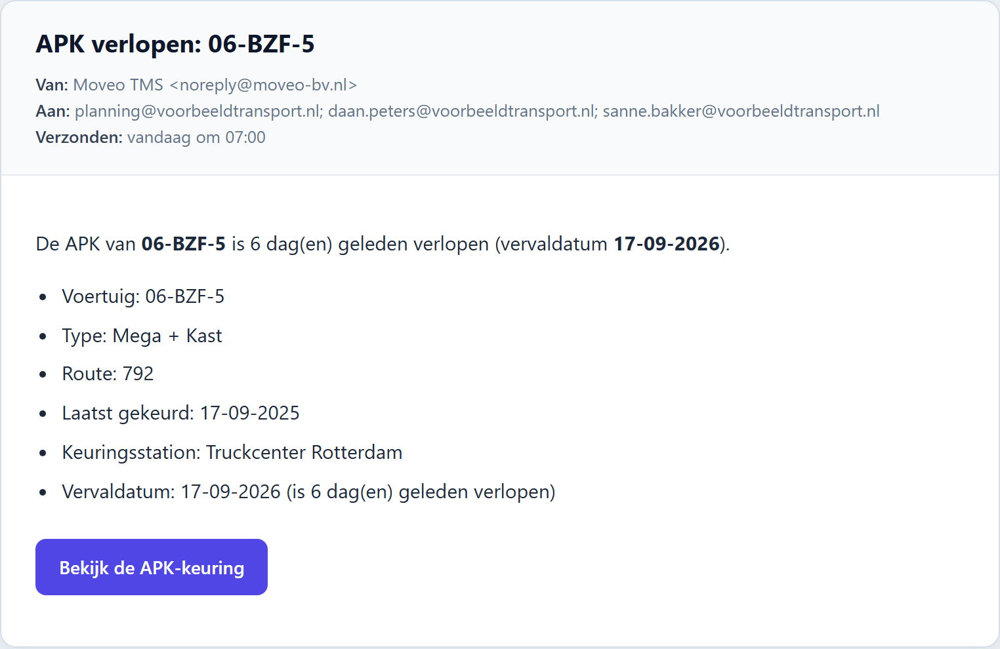
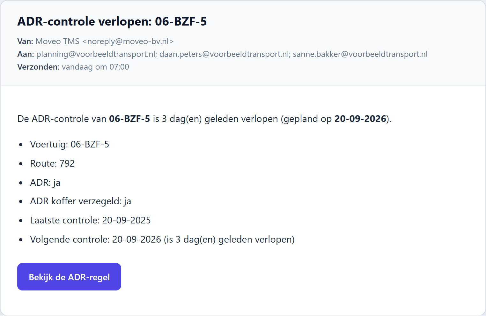
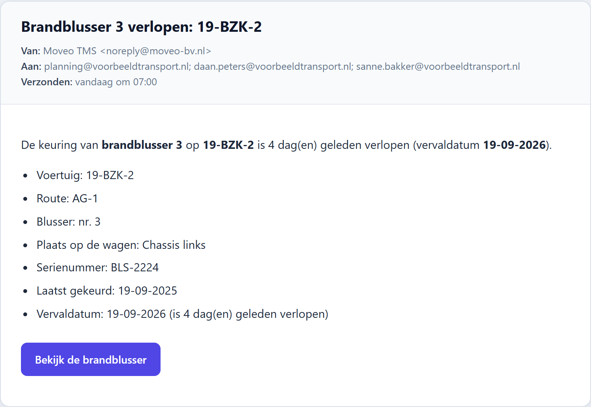
De knop onderaan brengt de ontvanger met één klik naar de juiste regel in het systeem. Er hoeft dus niemand te zoeken welke wagen bedoeld werd.
Dezelfde waarschuwing komt binnen in het postvak in het systeem zelf, achter het belletje rechtsboven. Het rode cijfer geeft aan hoeveel meldingen er nog openstaan. Zo ziet iedereen die inlogt meteen dat er iets ligt, ook wie zijn mail nog niet heeft gelezen.
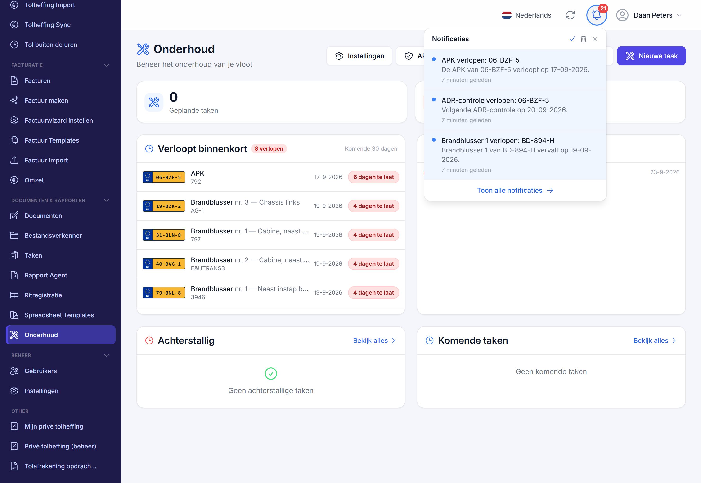
Alle drie de onderdelen werken volgens hetzelfde principe: eerst één keer een vooraankondiging, daarna dagelijks tot het geregeld is. Alleen de termijnen verschillen.
| Onderdeel | Eerste herinnering | Daarna elke dag vanaf |
|---|---|---|
| APK | 30 dagen voor de vervaldatum | 14 dagen voor de vervaldatum |
| ADR | 14 dagen voor de vervaldatum | 7 dagen voor de vervaldatum |
| Brandblussers | 14 dagen voor de vervaldatum | 7 dagen voor de vervaldatum |
| Moment | Wat er gebeurt |
|---|---|
| De eerste waarschuwing | Eén bericht per mail en in de app, zodat de afspraak ingepland kan worden. |
| De laatste twee weken (APK) of de laatste week (ADR en blussers) |
De herinnering komt elke dag opnieuw. |
| Na de vervaldatum | De herinnering blijft dagelijks komen, met de tekst hoeveel dagen het inmiddels te laat is. |
| Na het invullen van de nieuwe datum | De herinneringen stoppen vanzelf. Er hoeft niets weggeklikt of afgevinkt te worden. |
Staat er bij een regel per ongeluk niemand als ontvanger ingesteld, én zijn er ook geen standaardontvangers ingevuld, dan valt de waarschuwing niet stil. In dat geval krijgt iedereen met toegang tot de onderhoudsmodule de melding in zijn postvak. Er is dus altijd iemand die het ziet.
APK, ADR en brandblussers hebben elk een eigen instellingenscherm. Die zijn bewust identiek opgebouwd. Daarin ligt vast wanneer de herinneringen uitgaan en wie ze standaard ontvangt.
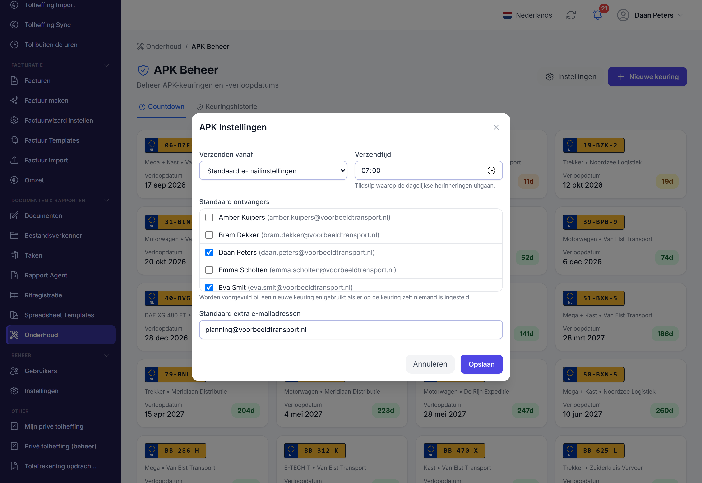
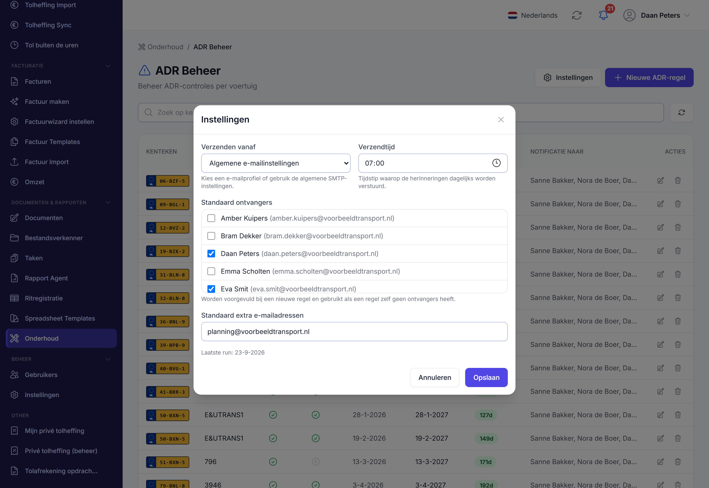
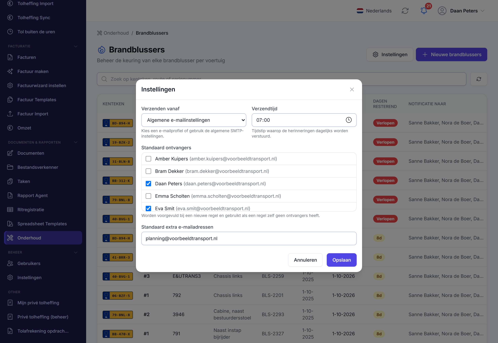
Onderaan het instellingenscherm staat ook wanneer de laatste ronde is gedraaid. Daarmee kunnen wij controleren dat het systeem daadwerkelijk elke dag heeft gekeken — en niet stilletjes is blijven staan.
Wij wachten niet tot een keuring verloopt en gaan er ook niet vanuit dat iemand het wel onthoudt. Elke wagen die voor u rijdt, staat in een systeem dat dagelijks meekijkt, dat waarschuwt voordat het misgaat, en dat blijft doorwaarschuwen tot het is opgelost.
Heeft u vragen over de keuringsstatus van een specifieke wagen, dan kunnen wij die binnen enkele seconden opzoeken en aan u doorgeven.